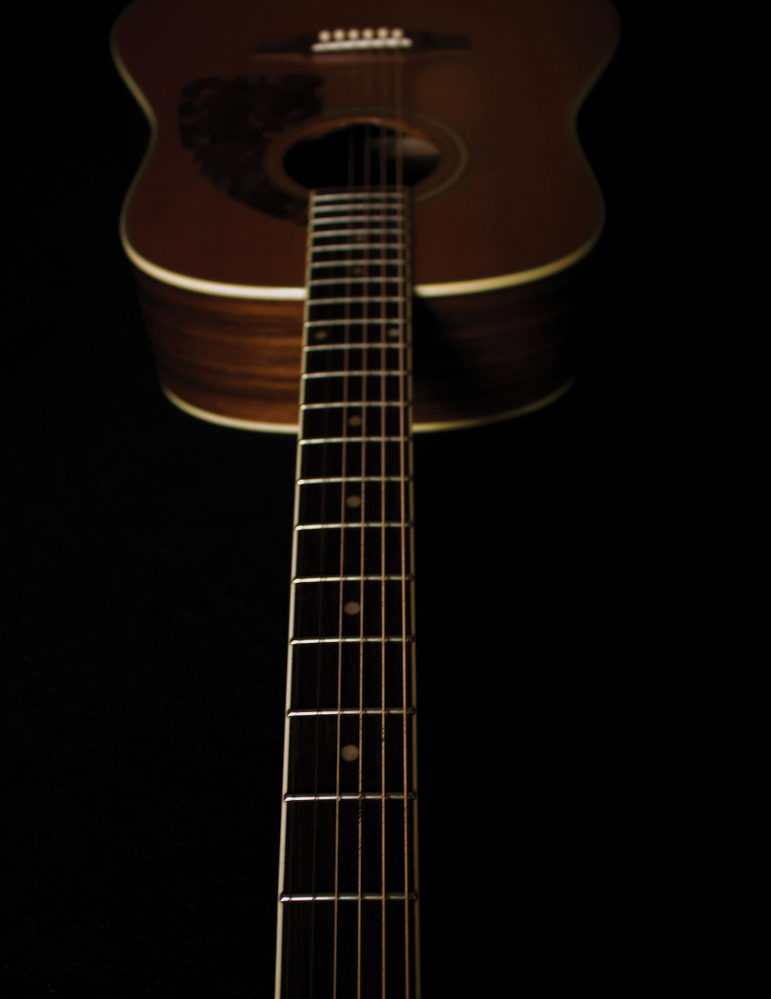

Think about why you decided to play guitar. If you’re like most students, you’d like to pick up an instrument and be able to play a song. Throughout this book, we will focus on methods to improve technique and overall understanding of the inner workings of music. It is equally important to develop your repertoire (or what songs you know) as you work through this book. In many ways having a large repertoire of music committed to memory is more important than other skills like understanding theory or reading sheet music. Not only will this repertoire determine what you play when you pick up your instrument but also what you can play with other people. Playing music with others is integral to developing as a musician. Many songs are based on similar chord progressions or melodic content. Building a large repertoire will also help you to recognize patterns and similarities between songs—only increasing your repertoire more.
It may be difficult to decide which songs to begin with. In many ways, your specific repertoire doesn’t really matter. Learning songs you like will help you retain interest in progressing and improving. If you enjoy hearing a song, you’ll want to play it. Sounds obvious, right? Start with a list of five songs.
Five songs I want to learn:
Note: Your song list will save on this browser but will need to be re-entered if you visit this site from another browser.
Learn the classics
In addition to songs you particularly like, it is also valuable to learn the classics. The history of guitar music is vast, and there is no better way to learn the instrument than from the masters. When parts of a song are too difficult for a beginner, it is always possible to learn a simplified version. You can revisit these songs while you grow as a musician. Learn the more intricate details when you are ready. This list is not comprehensive but is an excellent starting point. How many of these songs have you heard? Some may be unfamiliar, though you have likely heard most of them many times. Maybe there are even some songs you haven’t heard that you would like. Spend some time listening to and becoming familiar with all of these songs even if you aren’t quite ready to learn them. If you learn a song that you don’t particularly like, you have not wasted your time. Knowing what music you dislike may inform your musical taste as much or even more than knowing what music you like. Therefore, finding and being exposed to new music is always beneficial. Use the list on the next few 20 pages for inspiration while choosing songs to learn.

How to practice repertoire
Use the practice skills discussed previously when learning new repertoire. Devote part of your practice time to learning new music and part to reviewing songs you have already learned. This review is especially important as it is surprisingly easy to forget songs you once knew as your repertoire database grows. You can always learn simplified versions of any song to begin with and learn the more difficult parts as you get better at guitar. Use the repertoire list pages in the resources section at the end of this book to keep track of your repertoire. Be sure to add any and all new songs learned. If you don’t ultimately like a song that you learned, don’t hesitate to remove it from your list. There is no reason to waste practice time with music you dislike once you’ve learned what you can from a less-than-enjoyable song. Play songs you learn in as many settings as possible: by yourself, with other musicians on any instrument, with a full band, and especially along with recordings. Your repertoire list will grow and evolve with your skills and as your interests in new styles evolves. It is truly gratifying to look back at a long repertoire list after years of studying music.
300+ iconic guitar songs
Tip: Use the icon above to access the YouTube playlist.
"All Along The Watchtower"-Jimi Hendrix*
"All Day and All Night" -The Kinks
"Amarillo By Morning" -George Straight
"American Girl" -Tom Petty
"Another Brick In The Wall" -Pink Floyd
"Are You Gonna Be My Girl" -Jet
"Are You Gonna Go My Way" -Lenny Kravitz
"Back in Black"-AC/DC
"Bad Moon Rising" -Creedence Clearwater Revival
"Bad To The Bone" -George Thorogood
"Barracuda" -Heart
"Beat It" -Michael Jackson
"Big Yellow Taxi" -Joni Mitchell
"Billie Jean" -Michael Jackson
"Black Dog" -Led ¬Zeppelin
"Black Hole Sun" -Soundgarden
"Black Magic Woman" -Santana
"Blackbird" -The Beatles
"Blister in the Sun" -Violent Femmes
"Blitzkrieg Bop" -The Ramones
"Blue Orchid" -White Stripes
"Bohemian Rhapsody" -Queen
"Bold As Love" -Jimi Hendrix
"Born to Be Wild" -Steppenwolf
"Boulevard of Broken Dreams" -Green Day
"Boys Are Back in Town" -Thin Lizzy
"Brain Stew" -Green Day
"Breathe (In The Air)" -Pink Floyd
"Breezin’" -George Benson
"Brown Eyed Girl" -Van Morrison
"Bulls on Parade" -Rage Against the Machine
"Cake By The Ocean" -DNCE
"California Sun" -The Rivieras
"California" -Joni Mitchell
"Californication" -Red Hot Chili Peppers
"Canon Rock" -Jerry C
"Carry on My Wayward Son" -Kansas
"Castles Made Of Sand" -Jimi Hendrix
"Chelsea Morning" -Joni Mitchell
"Cherub Rock" -Smashing Pumpkins
"Classical Gas"-Mason Williams
"Cliffs of Dover" -Eric Johnson
"Closing Time" -Semisonic
"Come Together" -The Beatles
"Come as You Are" -Nirvana
"Comfortably Numb" -Pink Floyd
"Couldn't Stand The Weather" -Stevie Ray Vaughan
"Crazy Train" -Ozzy Osbourne
"Creep" -Radiohead
"Crossroads" -Robert Johnson/Cream/Eric Clapton
"Crosstown Traffic" -Jimi Hendrix
"Cruel" -St Vincent
"Cult of Personality" -Living Colour
"D'yer Mak'er" -Led Zeppelin
"Dani California" -Red Hot Chili Peppers
"Danny's Song" -Loggins & Messina
"Day Tripper" -The Beatles
"Do I Wanna Know?" -Arctic Monkeys
"Don't Stop 'Til You Get Enough" -Michael Jackson
"Don’t Fear the Reaper" -Blue Oyster Cult
"Don’t Know Why" -Norah Jones
"Don’t Stop Believin" -Journey
"Dreams" -Fleetwood Mac
"Drive" -Incubus
"Edge of Seventeen" -Stevie Nicks
"Enter Sandman" -Metallica
"Eruption" -Van Halen
"Europa" -Carlos Santana
"Every Breath You Take" -The Police
"Eye of the Tiger" -Survivor
"Fake Plastic Trees" -Radiohead
"Fire" -Jimi Hendrix
"Float On" -Modest Mouse
"Fly Away" -Lenny Kravitz
"Folsom Prison Blues" -Johnny Cash
"Forever and Ever, Amen" -Randy Travis
"Fortunate Son" -Creedence Clearwater Revival
"Four on Six" -Wes Montgomery
"Foxey Lady" -Jimi Hendrix
"Free Bird" -Lynard Skynard
"Free Fallin'" -Tom Petty/John Mayer
"Friends in Low Places" -Garth Brooks
"Funk 49" -James Gang
"Get Lucky" -Daft Punk
"Get Rhythm" -Johnny Cash
"Give Life Back To Music" -Daft Punk
"Give Me One Reason" -Tracy Chapman
"Give it Away" -Red Hot Chili Peppers
"Good Riddance (Time of Your Life)" -Green Day
"Gravity" -John Mayer
"Hallelujah" -Leonard Cohen/Jeff Buckley
"Harder to Breathe" -Maroon 5
"Heart Shaped Box" -Nirvana
"Heartbreaker" -Led Zeppelin
"Here Comes the Sun" -The Beatles
"Here For The Party" -Gretchen Wilson
"Hey Joe" -Jimi Hendrix
"High and Dry" -Radiohead
"Highway To Hell" -AC/DC
"Holiday" -Green Day
"Hotel California" -The Eagles
"Hound Dog"-Elvis
"House of the Rising Sun" -The Animals*
"Hurt" -Johnny Cash
"I Believe in a Thing Called Love" -The Darkness
"I Don't Trust Myself" -John Mayer
"I Hope You Dance" -Le Ann Womack
"I Love Rock and Roll"-Joan Jett
"I Shot the Sheriff" -Bob Marley/Eric Clapton
"I Still Haven't Found What I'm Looking For" -U2
"I Walk The Line" -Johnny Cash
"I Wanna Be Your Lover" -Prince
"I Want You (She's So Heavy)" -The Beatles
"I Want You Back" -The Jackson 5
"I Won’t Back Down" -Tom Petty
"I'm Coming Out" -Dianna Ross
"I'm So Lonesome I Could Cry" -Hank Williams
"I'm Yours" -Jason Mraz
"If 6 Was 9" -Jimi Hendrix
"Immigrant Song" -Led Zeppelin
"In Bloom" -Nirvana
"In My Life" -The Beatles
"In the Aeroplane over the Sea" -Neutral Milk Hotel
"Iron Man" -Black Sabbath
"Ironic" -Alanis Morissette
"Is This Love" -Bob Marley
"Island in the Sun" -Weezer
"Jailhouse Rock" -Elvis
"Jessica" -Allman Brothers
"Jessie’s Girl" -Rick Springfield
"Johnny B. Goode" -Chuck Berry
"Jolene" -Dolly Parton
"Just A Girl" -No Doubt
"Kansas City" -Wilbert Harrison
"Karma Police" -Radiohead
"Kashmir" -Led Zeppelin
"Killing in the Name" -Rage Against the Machine
"Kiss" -Prince
"Knocking On Heaven’s Door" -Bob Dylan*
"La Grange" -ZZ Top
"Landslide" -Fleetwood Mac*
"Layla" -Derek and the Dominos/Eric Clapton
"Let's Dance" -David Bowie/SRV
"Let's Get It On" -Marvin Gaye
"Let's Go Crazy" -Prince
"Let's Go Trippin'" -Dick Dale
"Life in the Fast Lane" -The Eagles
"Little Wing" -Jimi Hendrix*
"Livin’ on a Prayer" -Bon Jovi
"Locked Out Of Heaven" -Bruno Mars
"Lose Yourself To Dance" -Daft Punk
"Love Story" -Taylor Swift
"Lucky" -Jason Mraz & Colbie Caillat
"Mama Tried"-Merle Haggard
"Mamas Don't Let Your Babies..." -W. Jennings/W. Nelson